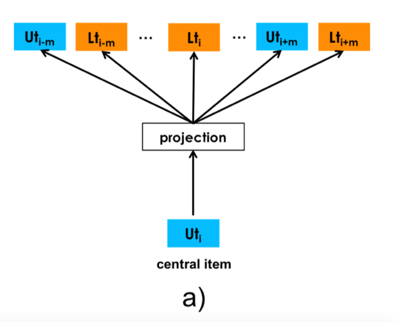
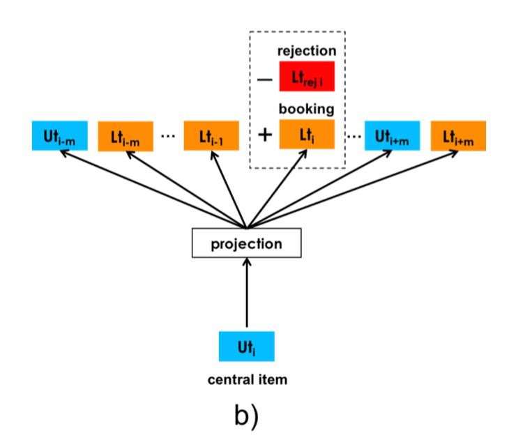

论文：Real-time Personalization using Embeddings for Search Ranking at Airbnb。
在这篇论文中提出了如何对listing(短租房源)和User(用户)的信息进行embedding的技术。该embedding模型可以捕获用户的短期和长期的兴趣，从而为用户推荐有效的房屋列表。同时，还要降低那些因为差评、宠物、住宿时间以及接待人数或者其他因素而拒绝用户的listing的推荐优先级。
该论文提出的推荐系统与之前的基于embedding的个性化推荐系统有以下几点不同：
Real-time Personalization
之前的很多基于embedding来进行个性化以及item推荐的系统都是离线训练好，然后存储下来，当部署到线上环境时，直接从存储空间中读取所推荐的内容。而本论文提出的推荐系统是基于用户当前点击的listing，然后计算该listing与其它listing的相似度，进行ranked后，实时地把用户比较感兴趣的listing推荐给他。
Adapting Training for Congregated Search
不同于网络搜索，旅游平台的搜索经常是聚合类型的，即用户频繁的在一个确定的market进行搜索，比如巴黎等。很少交叉多个markets进行搜索。在本论文提出的推荐系统中，我们需要把embedding训练过程对聚合搜索(根据market place进行聚合)进行适应，比如，在负采样的时候考虑到这一点，从而更好的获取在同一个market中获取相似的listings。
Leveraging Conversions as Global Context
当对listing进行embedding的时候，把booked listing作为全局上下文。
User Type Embeddings
之前的很多工作都是训练用户embedding用于捕获他们的长期兴趣点。当目标信号是稀疏的时候，就没有足够的数据来训练embedding表示。更不用说为每个用户保存embedding用于计算相似度的会占用很多内存空间。因此，希望通过对用户类型进行聚类，然后对每一类的用户类型训练它们对应的embedding。
Rejections as Explicit Negatives
为了降低所推荐的listing被拒绝的可能性，我们把host(屋主)的偏好信息通过把host的拒绝信息作为training时的负样本编码到listing type和user type。
对于短期兴趣个性化，我们使用超过8亿次的搜索点击sessions来训练listing embedding，从而得到高质量的listing表示。我们对真实的搜索流量进行了广泛的离线和在线评估，结果表明，在ranking模型中添加embedding特征，可以有效提高预定收益。另外，在搜索ranking算法中引入listing embedding，CTR提高20%。
对于长期兴趣个性化，我们使用5000万用户的booking listing序列来训练user type和listing type的embedding表示。而user type和listing type是在相同的向量空间中学习的，这样我们就可以计算user type embedding和listing type embedding之间的相似度，从而根据相似程度进行ranked。这个相似度作为搜索ranking 模型的附加特征，也成功被测试和部署。
简而言之，首先在airbnb短租平台上，用户和host之间的交互方式有以下几种：
- 用户点击listing(click)
- 用户预订listing(book)
- host拒绝用户的预订请求(reject)
基于以上的交互信息，该论文中需要获取用户的short-term和long-term兴趣。在该论文中，通过对
该论文中使用两种方式对listing，user type，listing type进行embedding，并根据这些embedding来捕获用户的long-term以及short-term兴趣的。
通过click session数据生成listing的embedding。生成这个embedding是为了进行listing的相似推荐以及对用户进行相同market内的实时个性化推荐。这里挖掘的是用户的short term兴趣：
通过booked session数据生成user type和listing type的embedding。目的是捕获不同user type的long term兴趣。由于booking signal过于稀疏，论文就对同类型的user和listing进行聚合，得到user type和listing type，并对他们进行embedding表示。
接下来，我们看看论文中具体是如何训练这些embedding表示的。
listing embedding
假设给定一系列的click session 序列，由N个用户产生，每一个click session 序列 定义为由用户点击且没有中断的包含M个listing的序列。这里的中断指的是用户点击该序列的最后一个listing与点击下一个listing的时间间隔超过30秒。如果超过30秒则把下一个listing放到另一个click session序列中。一个用户产生的的一系列click session序列如下所示：
给定以上的训练数据，需要生成d维的稠密向量表示，即生成所对应的embedding表示(相当于NLP中的字典中的某个word)。该模型使用skip-gram模型来生成listing embedding表示。目标函数如下：
其中，和分别表示listing l的输入向量和输出向量。超参数m为skip gram模型中的滑窗大小。V为数据集中listing id集合列表(相当于字典)。由于|V|太大，导致以上的skip gram模型的计算复杂度太高，因此我们在这里使用负采样的方式来优化目标函数，降低计算复杂度：
对于表示正样本listing pairs，采样自clicked listing l和它在同一个click session 序列中的上下文listing c。而表示负样本listing pairs，采样自clicked listing l以及从V(listing id集合)中随机采样到的listing c。
Booked Listing as Global Context
根据用户最终是否booking 一个listing来把click session 序列分成两类：
- booked sessions。最后一个listing为booking listing
- exploratory sessions。最后一个listing是click listing而不是booking listing。
把booked listing作为global context引入到skip model中，如下图所示：
所以，对于booked sessions，它所对应的目标函数需要改写成：
式(2-4)中表示booked listing 的embedding向量。对于exploratory sessions，依然使用式(2-3)作为目标函数。
Adapting Training for Congregated Search
在线旅游预订网站的用户通常只在单一market中进行搜索。因此，正样本集合大部分都来自于相同的market。换句话说，由于负样本集合来自于随机采样，因此大部分的listing很大概率来自于不同的market。因此，给定一个中心listing l，正样本的上下文listing几乎来自同一个market，然而负样本大部分的上下文listing对应的market与listing l的market不一致。这会导致局部最优解。为了解决这个问题，我们通过在与listing l有相同的market的listing集合中进行负采样得到与market相关的负样本集合，式(2-4)就变成了：
Cold start listing embeddings
每天都有host创建新的listing，并在airbnb上招租。这些新的listing并没有对应的embedding，因为它们从没有出现在训练数据集中。因此，我们需要利用已存在的listing embedding来对新的listing生成embedding。
首先，根据host所提供的新listing的location，price，listing type等信息找到与新listing在地理位置(直径范围在10英里以内)上最相近的3个listings，这些listings都有对应的embedding，同时与新listing有一样的listing type，一样的价格区间。
接下来，使用这三个listing的embedding的求和平均得到的向量作为新listing的embedding。
使用这种方式可以覆盖98%的新listing的embedding冷启动问题。
Examining Listing Embeddings
首先，使用k-means对embedding进行聚类，看地理位置的相关性信息是否被编码到embedding中。如下图所示，在california一共形成100个聚类，同时地理位置相近的listing都聚集在一起：
同时，他们发现这些聚类对于重新定义market很有帮助。
接着，计算来自LA的不同listing types的listings之间的平均相似度(table 1)和不同价格区间的listings之间的平均相似度。这里使用的相似度为cosine相似度。
从上图结果来看，listing type以及价格区间的相关性也都很好的被编码到embedding中。
user-type&listing type embedding
Listing embedding可以为用户推荐相同market中感兴趣的相似listings。但，这种embedding只能根据用户短时间内的click session来进行个性化推荐。
然而，除了基于short-term兴趣的个性化推荐外，我们还可以使用利用用户long-term兴趣这个信息，来对用户进行个性化推荐。比如，给定一个用户，他现在正在查找LA market的listings，同时我们已经有他之前在NY和London这些market的booked listing信息，那么我们可以利用之前的booked listing信息来为他推荐LA market的listings。
尽管之前的listing embedding也会捕获一些cross-market的相关性信息，但是一种更加有效的方法应该是从同一个用户他的booked listing信息中获取。特别地，假设给定N个用户的一系列booking session ，表示为用户j的booked listing序列。但是使用这些booked listing信息进行训练存在以下挑战:
- booking sessions 数据数据量远远少于click session。
- 很多用户过去只预订过一次listing
- 为了学习有意义的embedding，在训练数据中，listing至少需要出现5-10次(类似于word minimal count)，但是平台上的很多listing被booked的次数都小于5-10次
- 最后，较长时间的间隔中，用户的行为有可能会发生改变，比如：因为职业的原因。
为了解决以上几个问题，我们使用listing type来代替listing id。利用rule-based mapping来对listing id进行归类从而得到listing type信息，如下图所示：
比如说，一个Entire Home listing 来自US，可以入住2人，1张床，1个卫生间以及一个浴室，平均价格为1晚$60.8，平均每晚每人$29.3，5个评论，5星，100%的新用户通过率(host 没有拒绝任何用户)，那么它所对应的listing type定义为。
同时，为了解决用户会改变喜好这个问题，我们提出了user-type这个概念，它的embedding与listing-type的embedding是同一向量空间的。举例说明user-type是如何表示的：某个用户，来自San Francisco(market)，macbook(device type)，english(Language)，full profile(Full profile), profile user photo(profile photo),83.4% guest 5star rating(guest 5 start)，3booking in the past(Num Bookings)，52.52 per night(price per night)，31.85 price per night per guest( price per Guest)，2.33 capacity(Capacity)，8.24Reviews(Num Reviews)，76.1% listing 5 start rating (Listing 5 start)，那么该用户对应的user-type定义为:(注：论文中对num bookings这个特征的转换有问题应该为nb3而不是nb1)。
在生成listing embedding的训练数据booking session的时候，同时也计算最新booking信息所对应的user-type embedding。对于一个第一次booking的用户，它的user-type信息只考虑table 4中前5行信息，因为在这之前没有历史数据可以参考，这种方式也可以解决注销用户或过去没有booking记录的用户个性化推荐的冷启动问题。
Training Procedure
为了学习user-type和listing-type的embedding，我们把user-type合并到booking session中。
集合由N个用户的booking session 组成。每一个session记为，表示一个booking事件序列，比如(user_type,listing_type)元组按时间排列。注意，这里的每一个session序列都是由同一个用户id产生的，这就是说同一个用户，他的user-type可以随着时间发生改变，这也就解决了前面提到的第4点问题。同样的，对于listing-type来说，同一个listing它所对应的listing type也可以随着时间发生改变。
对user-type和listing-type的skip gram模型的目标函数与公式(2-3)类似，这里的中心item为user-type()或者是listing-type()，具体是哪一个取决于滑窗中的中心item是什么。比如，如果滑窗中的中心item为user-type，那么对应的目标函数可以写成：
此处，包含user-type和listing-type，都来自于用户最近的历史记录。包含随机采样的user-type和listing-type。同样的，如果中心item为listing-type，那么对应的目标函数可以写成:

如上图所示，左图显示了公式(2-6)。由于booking sessions中的listing 的market大多数都是不一样的，因此没有必要从同一个market中进行负采样(如式(2-5)的做法)。
Explicit Negatives for Rejections
与click listing不同，不能只考虑用户侧的偏好，booking需要同时考虑用户侧与host侧的偏好，即需要考虑host的反馈信息，即接受用户的预订还是拒绝用户的预订。host拒绝用户预订的原因有:用户的star评级很差，用户信息不全或者为空，没有设置用户头像等，这些原因都在table 4中定义了。
在训练过程中，除了用户偏好的signal之外，还可以把host拒绝信息编码到embedding空间中。把拒绝signal信息考虑进来的目的是一些listing-type没办法有效区别成功预订的user-type以及被拒绝预订的user-type。而我们希望被拒绝的listing-type embedding与那些用户信息不完整，用户star评分低于平均用户star评分所对应的user-type embedding在向量空间中比较相近。
基于拒绝signal的embedding进行个性化推荐，可以避免用户被拒绝的概率，从而提高booking的成功率。

这时目标函数(2-6)需要变成如下形式:
同样的，目标函数(2-7)需要变成如下形式:
利用学习到的所有user-type和listing-type的embedding表示，我们基于cosine相似度，计算当前user-type embedding和一系列候选listing-type embedding的相似度。如下图所示：
从上图可以看出，与给定的user-type最匹配的listing-type，多对应的listing特征(对照table 3)为：entire home，lots of good reviews, large and above average price。而那些没有满足用户喜好的listing-type对应的相似度非常低，他们的listing type对应的特点为：less space，lower price small number of reviews。
实验
训练listing embedding
使用来自用户的8亿条click sessions信息，根据user id把这些click session进行分类，同时对click session中的listing按照时间进行排序。然后对这些listing序列进行预处理：
- 对排好序的listing 序列根据俩俩listing之间的时间间隔是否超过30秒，把两个listing切分成两个部分。
- 将意外或者过短的click listing剔除，例如用户在listing页面上停留时间低于30秒。但保留有两次以上点击的listing
- 把这个处理过的listing 序列与user id相关的信息去除
在离线评估中，当对booking session进行5倍的过采样时获得最佳效果。
setting up daily training
在训练的使用使用sliding window来获取最近几个月的数据集作为新的训练集，这样可以保证数据集的时效性。
同时发现，每天都对模型从头开始训练，可以获得的离线性能比在线增量训练的模型性能更好。虽然，重新训练会导致同一个listing，新旧模型得到的embedding向量不一样，但是由于在模型中主要使用embedding向量的cosine相似度，而不是embedding向量本身，所以重新训练并不会产生差异。
离线评估
为了快速验证不同的想法，他们需要可以快速评估模型性能，因此采用了离线评估的方式。如下图所示，已有模型Search Ranking model需要点击很多次才能有一次booked listing，而最好的模型是d32 book+neg，它需要最少的点击数就可以产生一次booked listing。